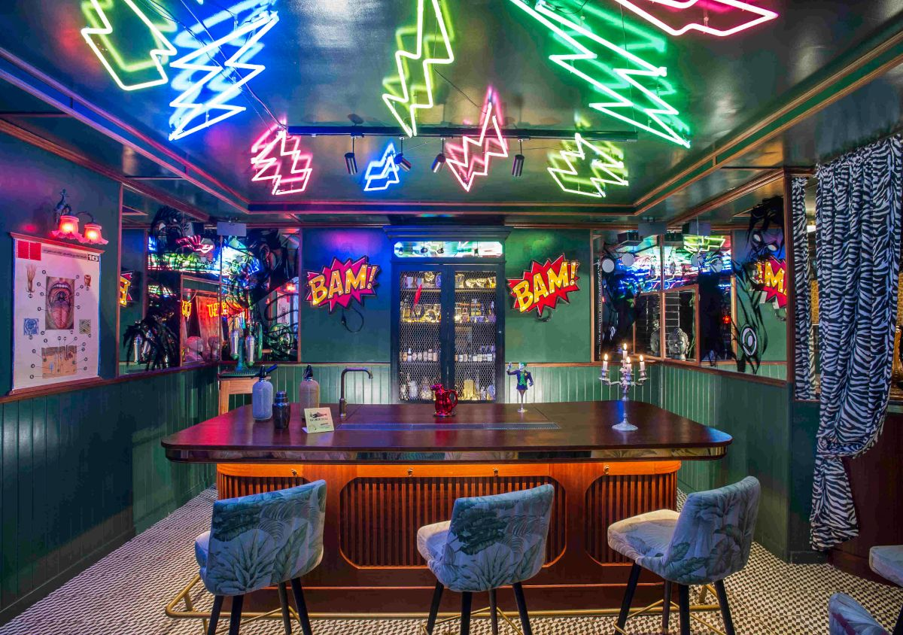
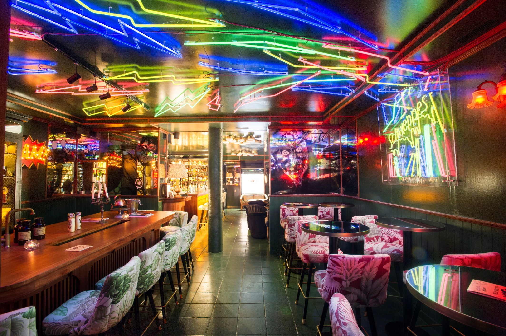
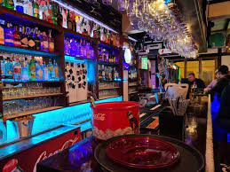
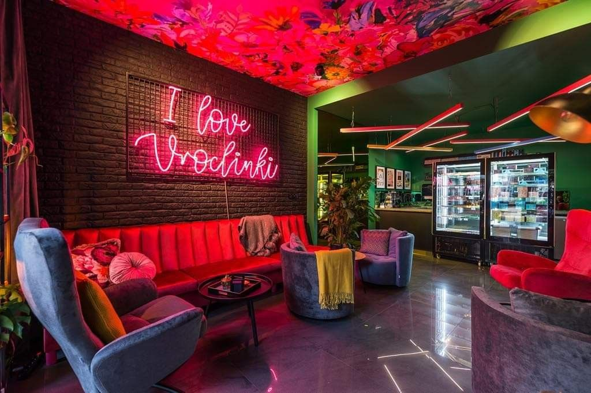

NUESTRA HISTORIA
Nacimos en el 2010 en Almagro, provenientes de una extensa tradición gastronómica familiar. En un comienzo, nos avocamos a comida casera y café de alta gama; construyendo nuestro propio ADN. En ese camino, nos obsesionamos con los tragos perfectos, y haciendo pruebas, lentamente empezamos a testear los productos. El impacto de la gente fue inmediato. Fascinados con la experiencia, se lanzaron a recomendar nuestras comidas y bebidas de boca a boca. Ese enorme fervor y entusiasmo que la propia presión de los clientes transformó, hizo de Coderbar un centro de culto para los fanáticos de la combinación ambiente-menú.




